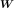

GeneralLinearModelAlgorithm¶
-
class
GeneralLinearModelAlgorithm(*args)¶ Algorithm for the evaluation of general linear models.
- Available constructors:
GeneralLinearModelAlgorithm(inputSample, outputSample, covarianceModel, basis, normalize=True, keepCovariance=True)
GeneralLinearModelAlgorithm(inputSample, outputSample, covarianceModel, basisCollection, normalize=True, keepCovariance=True)
Parameters: - inputSample, outputSample :
Sampleor 2d-array The samples and .
- inputTransformation :
Function Function
 used to normalize the input sample.
used to normalize the input sample.If used, the meta model is built on the transformed data.
- basis :
Basis Functional basis to estimate the trend: .
If , the same basis is used for each marginal output.
- basisCollection : collection of
Basis Collection of
 functional basis: one basis for each marginal output.
functional basis: one basis for each marginal output.An empty collection means that no trend is estimated.
- covarianceModel :
CovarianceModel Covariance model of the Gaussian process. See notes for the details.
- normalize : bool, optional
Indicates whether the input sample has to be normalized.
OpenTURNS uses the transformation fixed by the User in inputTransformation or the empirical mean and variance of the input sample. Default is set in resource map key GeneralLinearModelAlgorithm-NormalizeData
- keepCovariance : bool, optional
Indicates whether the covariance matrix has to be stored in the result structure GeneralLinearModelResult. Default is set in resource map key GeneralLinearModelAlgorithm-KeepCovariance
Notes
We suppose we have a sample where for all
 , with a given function.
, with a given function.The objective is to build a metamodel
 , using a general linear model: the sample is considered as the restriction of a Gaussian process on . The Gaussian process is defined by:
, using a general linear model: the sample is considered as the restriction of a Gaussian process on . The Gaussian process is defined by:where:
with and the trend functions.
 is a Gaussian process of dimension
with zero mean and covariance function (see CovarianceModelfor the notations).We note:
The GeneralLinearModelAlgorithm class estimates the coefficients
 where
where  is the vector of parameters of the covariance model (a subset of
is the vector of parameters of the covariance model (a subset of  ) that has been declared as active (by default, the full vectors
) that has been declared as active (by default, the full vectors  and
and  ).
).The estimation is done by maximizing the reduced log-likelihood of the model, see its expression below.
If a normalizing transformation
has been used, the meta model is built on the inputs  .
.Estimation of the parameters
We note:
where .
The model likelihood writes:
If
 is the Cholesky factor of
is the Cholesky factor of  , ie the lower triangular matrix with positive diagonal such that , then:
, ie the lower triangular matrix with positive diagonal such that , then:(1)¶

The maximization of (1) leads to the following optimality condition for
 :
:This expression of as a function of
 is taken as a general relation between and and is substituted into (1), leading to a reduced log-likelihood function depending solely on .
is taken as a general relation between and and is substituted into (1), leading to a reduced log-likelihood function depending solely on .In the particular case where
 and
and  is a part of , then a further reduction is possible. In this case, if is the vector in which has been substituted by 1, then:
is a part of , then a further reduction is possible. In this case, if is the vector in which has been substituted by 1, then:showing that is a function of
 only, and the optimality condition for reads:
only, and the optimality condition for reads:which leads to a further reduction of the log-likelihood function where both
and are replaced by their expression in terms of .The default optimizer is
TNCand can be changed thanks to the setOptimizationAlgorithm method. User could also change the default optimization solver by setting the GeneralLinearModelAlgorithm-DefaultOptimizationAlgorithm resource map key to one of theNLoptsolver names.It is also possible to proceed as follows:
- ask for the reduced log-likelihood function of the GeneralLinearModelAlgorithm thanks to the getObjectiveFunction() method
- optimize it with respect to the parameters and using any optimization algorithms (that can take into account some additional constraints if needed)
- set the optimal parameter value into the covariance model used in the GeneralLinearModelAlgorithm
- tell the algorithm not to optimize the parameter using setOptimizeParameters
- The behaviour of the reduction is controlled by the following keys in
ResourceMap: - ResourceMap.SetAsBool(‘GeneralLinearModelAlgorithm-UseAnalyticalAmplitudeEstimate’, true) to use the reduction associated to . It has no effect if or if
 and is not part of
and is not part of - ResourceMap.SetAsBool(‘GeneralLinearModelAlgorithm-UnbiasedVariance’, true) allows to use the unbiased estimate of where
 is replaced by
is replaced by  in the optimality condition for .
in the optimality condition for .
- ResourceMap.SetAsBool(‘GeneralLinearModelAlgorithm-UseAnalyticalAmplitudeEstimate’, true) to use the reduction associated to
With huge samples, the hierarchical matrix implementation could be used if OpenTURNS had been compiled with hmat-oss support.
This implementation, which is based on a compressed representation of an approximated covariance matrix (and its Cholesky factor), has a better complexity both in terms of memory requirements and floating point operations. To use it, the GeneralLinearModelAlgorithm-LinearAlgebra resource map key should be instancied to HMAT. Default value of the key is LAPACK.
A known centered gaussian observation noise can be taken into account with
setNoise():Examples
Create the model
 and the samples:
and the samples:>>> import openturns as ot >>> f = ot.SymbolicFunction(['x'], ['x * sin(x)']) >>> inputSample = ot.Sample([[1.0], [3.0], [5.0], [6.0], [7.0], [8.0]]) >>> outputSample = f(inputSample)
Create the algorithm:
>>> basis = ot.ConstantBasisFactory().build() >>> covarianceModel = ot.SquaredExponential(1) >>> algo = ot.GeneralLinearModelAlgorithm(inputSample, outputSample, covarianceModel, basis) >>> algo.run()
Get the resulting meta model:
>>> result = algo.getResult() >>> metamodel = result.getMetaModel()
Attributes: thisownThe membership flag
Methods
getClassName()Accessor to the object’s name. getDistribution()Accessor to the joint probability density function of the physical input vector. getId()Accessor to the object’s id. getInputSample()Accessor to the input sample. getInputTransformation()Get the function normalizing the input. getName()Accessor to the object’s name. getNoise()Observation noise variance accessor. getObjectiveFunction()Accessor to the log-likelihood function that writes as argument of the covariance’s model parameters. getOptimizationAlgorithm()Accessor to solver used to optimize the covariance model parameters. getOptimizationBounds()Optimization bounds accessor. getOptimizeParameters()Accessor to the covariance model parameters optimization flag. getOutputSample()Accessor to the output sample. getResult()Get the results of the metamodel computation. getShadowedId()Accessor to the object’s shadowed id. getVisibility()Accessor to the object’s visibility state. hasName()Test if the object is named. hasVisibleName()Test if the object has a distinguishable name. run()Compute the response surface. setDistribution(distribution)Accessor to the joint probability density function of the physical input vector. setInputTransformation(inputTransformation)Set the function normalizing the input. setName(name)Accessor to the object’s name. setNoise(noise)Observation noise variance accessor. setOptimizationAlgorithm(solver)Accessor to the solver used to optimize the covariance model parameters. setOptimizationBounds(optimizationBounds)Optimization bounds accessor. setOptimizeParameters(optimizeParameters)Accessor to the covariance model parameters optimization flag. setShadowedId(id)Accessor to the object’s shadowed id. setVisibility(visible)Accessor to the object’s visibility state. -
__init__(*args)¶ Initialize self. See help(type(self)) for accurate signature.
-
getClassName()¶ Accessor to the object’s name.
Returns: - class_name : str
The object class name (object.__class__.__name__).
-
getDistribution()¶ Accessor to the joint probability density function of the physical input vector.
Returns: - distribution :
Distribution Joint probability density function of the physical input vector.
- distribution :
-
getId()¶ Accessor to the object’s id.
Returns: - id : int
Internal unique identifier.
-
getInputTransformation()¶ Get the function normalizing the input.
Returns: - transformation :
Function Function T that normalizes the input.
- transformation :
-
getName()¶ Accessor to the object’s name.
Returns: - name : str
The name of the object.
-
getNoise()¶ Observation noise variance accessor.
Parameters: - noise : sequence of positive float
The noise variance
 of each output value.
of each output value.
-
getObjectiveFunction()¶ Accessor to the log-likelihood function that writes as argument of the covariance’s model parameters.
Returns: Notes
The log-likelihood function may be useful for some postprocessing: maximization using external optimizers for example.
Examples
Create the model
and the samples:>>> import openturns as ot >>> f = ot.SymbolicFunction(['x0'], ['x0 * sin(x0)']) >>> inputSample = ot.Sample([[1.0], [3.0], [5.0], [6.0], [7.0], [8.0]]) >>> outputSample = f(inputSample)
Create the algorithm:
>>> basis = ot.ConstantBasisFactory().build() >>> covarianceModel = ot.SquaredExponential(1) >>> algo = ot.GeneralLinearModelAlgorithm(inputSample, outputSample, covarianceModel, basis) >>> algo.run()
Get the log-likelihood function:
>>> likelihoodFunction = algo.getObjectiveFunction()
-
getOptimizationAlgorithm()¶ Accessor to solver used to optimize the covariance model parameters.
Returns: - algorithm :
OptimizationAlgorithm Solver used to optimize the covariance model parameters. Default optimizer is
TNC
- algorithm :
-
getOptimizationBounds()¶ Optimization bounds accessor.
Returns: - bounds :
Interval Bounds for covariance model parameter optimization.
- bounds :
-
getOptimizeParameters()¶ Accessor to the covariance model parameters optimization flag.
Returns: - optimizeParameters : bool
Whether to optimize the covariance model parameters.
-
getOutputSample()¶ Accessor to the output sample.
Returns: - outputSample :
Sample The output sample .
- outputSample :
-
getResult()¶ Get the results of the metamodel computation.
Returns: - result :
GeneralLinearModelResult Structure containing all the results obtained after computation and created by the method
run().
- result :
-
getShadowedId()¶ Accessor to the object’s shadowed id.
Returns: - id : int
Internal unique identifier.
-
getVisibility()¶ Accessor to the object’s visibility state.
Returns: - visible : bool
Visibility flag.
-
hasName()¶ Test if the object is named.
Returns: - hasName : bool
True if the name is not empty.
-
hasVisibleName()¶ Test if the object has a distinguishable name.
Returns: - hasVisibleName : bool
True if the name is not empty and not the default one.
-
run()¶ Compute the response surface.
Notes
It computes the response surface and creates a
GeneralLinearModelResultstructure containing all the results.
-
setDistribution(distribution)¶ Accessor to the joint probability density function of the physical input vector.
Parameters: - distribution :
Distribution Joint probability density function of the physical input vector.
- distribution :
-
setInputTransformation(inputTransformation)¶ Set the function normalizing the input.
Parameters: - transformation :
Function Function that normalizes the input. The input dimension should be the same as input’s sample dimension, output dimension should be output sample’s dimension
- transformation :
-
setName(name)¶ Accessor to the object’s name.
Parameters: - name : str
The name of the object.
-
setNoise(noise)¶ Observation noise variance accessor.
Parameters: - noise : sequence of positive float
The noise variance
of each output value.
-
setOptimizationAlgorithm(solver)¶ Accessor to the solver used to optimize the covariance model parameters.
Parameters: - algorithm :
OptimizationAlgorithm Solver used to optimize the covariance model parameters.
- algorithm :
-
setOptimizationBounds(optimizationBounds)¶ Optimization bounds accessor.
Parameters: - bounds :
Interval Bounds for covariance model parameter optimization.
Notes
Parameters involved by this method are:
- Scale parameters,
- Amplitude parameters if output dimension is greater than one or analytical sigma disabled,
- Additional parameters.
Lower & upper bounds are defined in resource map. Default lower upper bounds value for all parameters is and defined thanks to the GeneralLinearModelAlgorithm-DefaultOptimizationLowerBound resource map key.
For scale parameters, default upper bounds are set as
 times the difference between the max and min values of X for
each coordinate, X being the (transformed) input sample.
The value is defined in resource map
(GeneralLinearModelAlgorithm-DefaultOptimizationScaleFactor).
times the difference between the max and min values of X for
each coordinate, X being the (transformed) input sample.
The value is defined in resource map
(GeneralLinearModelAlgorithm-DefaultOptimizationScaleFactor).Finally for other parameters (amplitude,…), default upper bound is set to
 (corresponding resource map key is
GeneralLinearModelAlgorithm-DefaultOptimizationUpperBound)
(corresponding resource map key is
GeneralLinearModelAlgorithm-DefaultOptimizationUpperBound)- bounds :
-
setOptimizeParameters(optimizeParameters)¶ Accessor to the covariance model parameters optimization flag.
Parameters: - optimizeParameters : bool
Whether to optimize the covariance model parameters.
-
setShadowedId(id)¶ Accessor to the object’s shadowed id.
Parameters: - id : int
Internal unique identifier.
-
setVisibility(visible)¶ Accessor to the object’s visibility state.
Parameters: - visible : bool
Visibility flag.
-
thisown¶ The membership flag